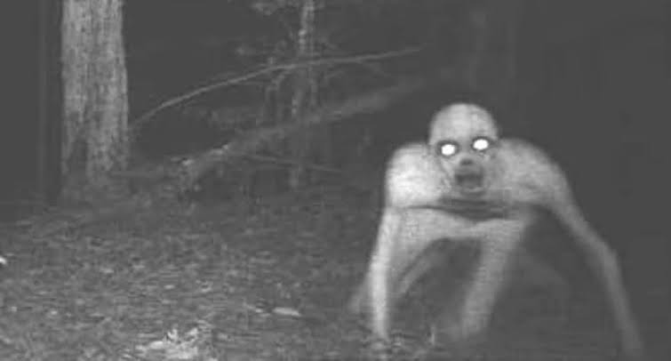
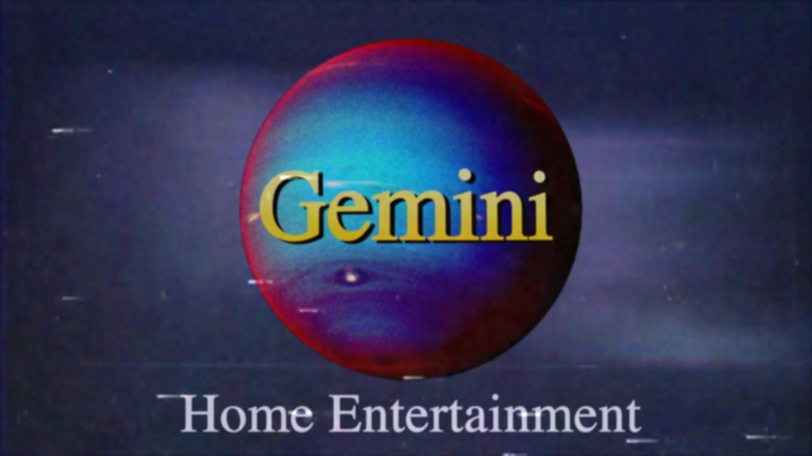

Slender Man

A autoria da criação da criatura é de Eric Knudsen que, sob o pseudônimo de Victor Surge, fez no
Photoshop a imagem do Homem Esguio para participar de um concurso no fórum Something Awful, em 2009
(ver imagem acima).
O grupo de discussão tinha como propósito debater temas paranormais, e convidou os seus membros a criarem uma
imagem e história que fosse muito assustadora. Knudsen postou duas fotografias em preto e branco, mostrando um
grupo de crianças e ao fundo a figura aterrorizante de um homem alto, magro, sem rosto e com o corpo
anormalmente esticado.
O autor ainda publicou uma legenda que serviria como base para a criação das diversas histórias que foram
disseminadas posteriormente sobre a macabra figura, que Victor nomeou na época de "The Slender
Man".
SKINWALKERS

- Criaturas obscuras: Os skinwalkers são seres misteriosos e assombrosos que habitam as lendas e folclore de diversas culturas indígenas. Descritos como xamãs ou bruxos que adquiriram o poder de se transformar em animais, eles personificam o medo e a escuridão, capazes de assumir formas diferentes para aterrorizar e perseguir suas vítimas.
- Trocadores de pele: Os skinwalkers são conhecidos por sua habilidade única de trocar de forma, abandonando sua aparência humana para se transformar em animais selvagens. Nesses momentos de metamorfose, sua presença é marcada por um arrepio na espinha e uma sensação inquietante no ar. Essa capacidade de assumir a forma de criaturas poderosas os torna ainda mais aterrorizantes, pois podem se mover rapidamente e atacar sem aviso prévio.
- Portadores de maldição: Dizem que os skinwalkers são portadores de maldições e malevolência. Acredita-se que eles tenham feito pactos sombrios com entidades malignas para obter seus poderes sobrenaturais. Por trás de suas metamorfoses e habilidades assustadoras, eles carregam um fardo de escuridão que consome suas almas e os leva a cometer atos terríveis e sinistros.
- Caçadores da noite: Os skinwalkers são considerados caçadores da noite, mergulhados nas sombras e na escuridão. Eles são conhecidos por perseguir suas vítimas incansavelmente, deixando uma trilha de medo e desespero em seu caminho. Sua natureza predatória e habilidades sobrenaturais os tornam criaturas temidas e respeitadas. Encontrar-se com um skinwalker é se deparar com um mal indescritível, uma presença sinistra que faz o coração congelar e a alma tremer.
